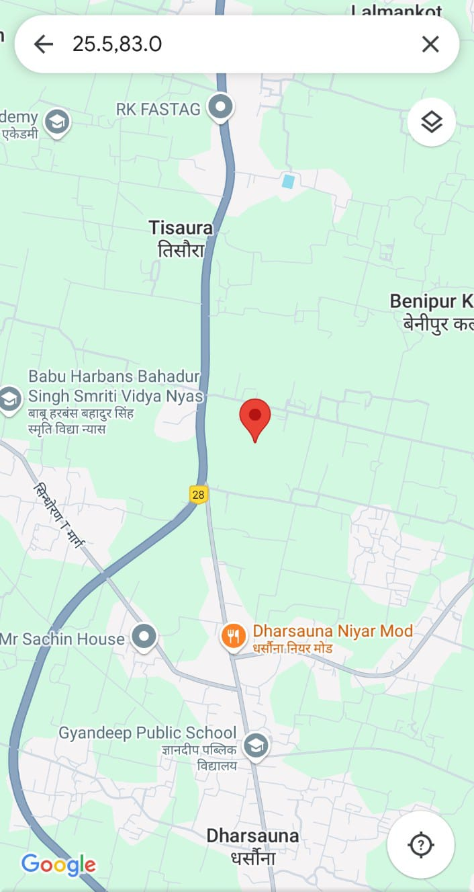
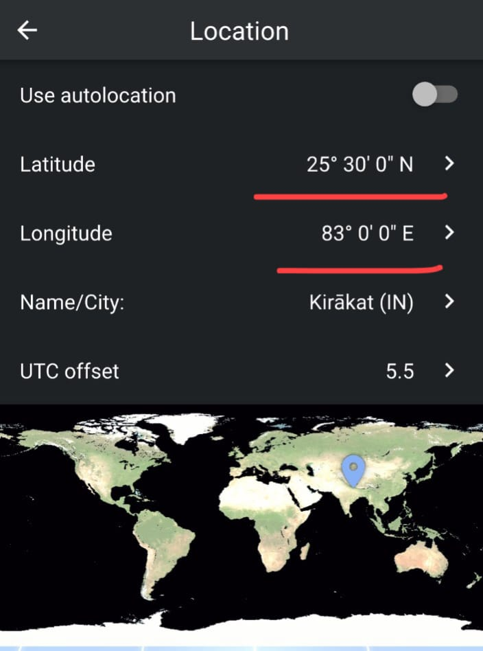
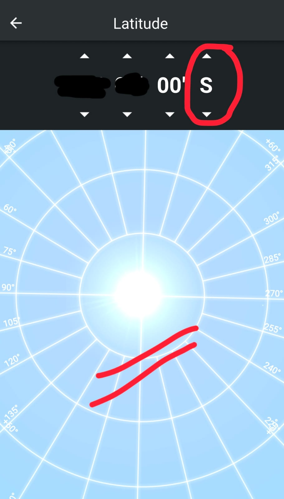
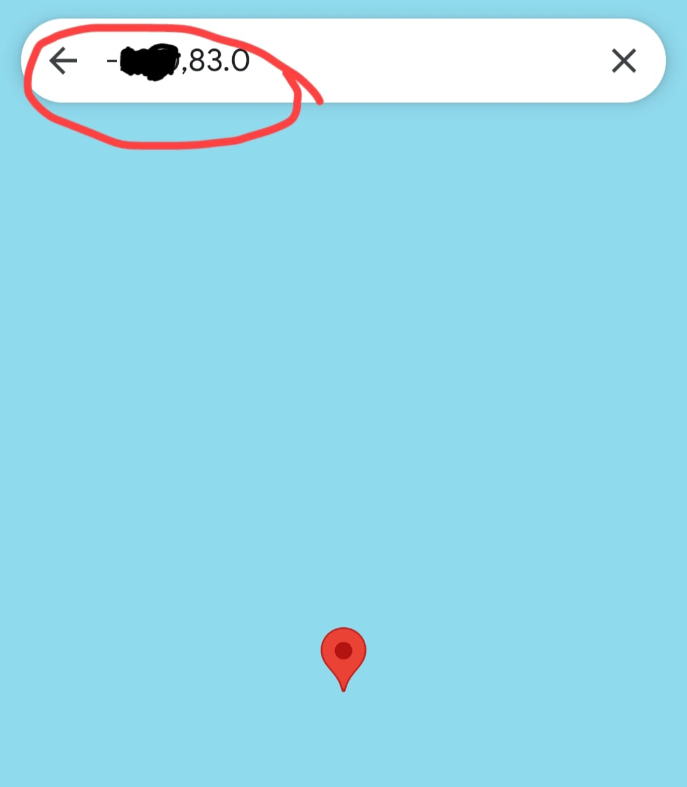
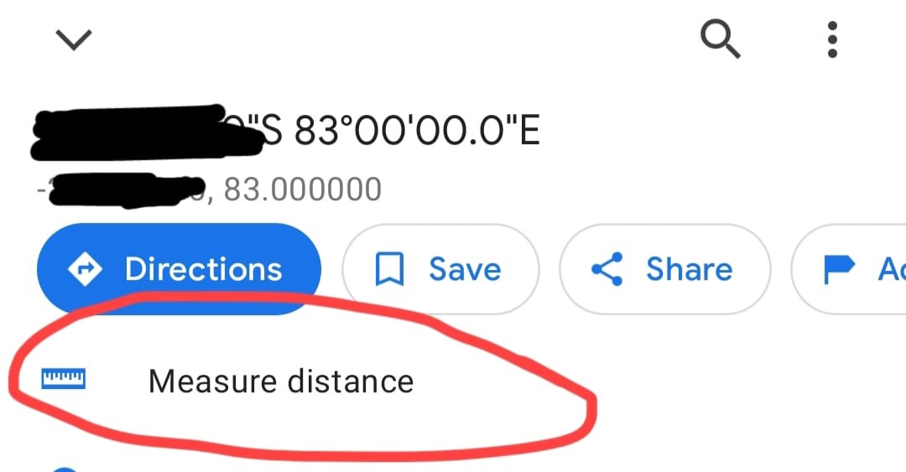
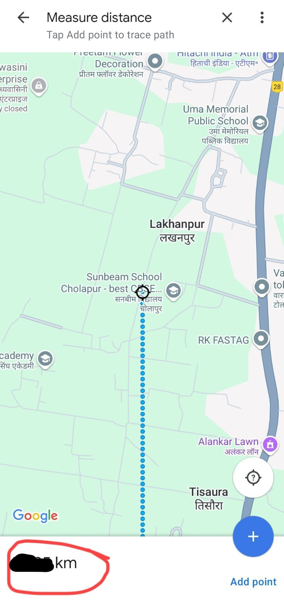
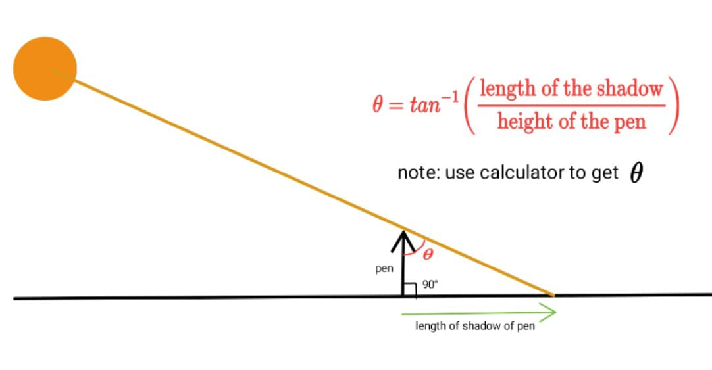

How to find circumference of Earth
- Parameters of the experiment are designed for January 04, 2025.
- Ideal time to conduct experiment to minimize the error: 11:55 AM
- Duration of Experiment 05 Minutes.
- Step 1: Know your location: Location of Sunbeam School, Cholapur is aproximately 25 degree 30 minutes North latitude and 83 degree 00 minute East longitute. In short 25.5,83.0 on google map.

- Step 2: Find the desired location on Earth: Using Stellarium app, determine the latitude on Earth where the sun is directly overheadd at the time of your experiment.

- In order to do this open Stellarium app, click on the settings > location. Now in place of latitude feed 25 degree 30 minutes and in place of longitude feed 83 degree 0 minutes. This is your current aproximate location.
- Now you can not change longitude(doing so, you will be thrown inside jail). Now keep on changing latitude position until you find sun straight above your head. Note down latitude and longitude position in your diary when sun is directly overhead. Here is screenshot for your reference.

- Step 3: Feed the location you got in step 2 from Stellarium app, in google map.
-
Note: In Stellarium, if latitude is in south, feed negative of latitude in google map, for example if your latitude is x degree 0 minute south in Stellarium, in google map you should feed -x.0,83.0. (remember you did not change longitude so it will remain 83). Here is a screenshot for your reference.

-
Now in google map, click on measure distance then measure distance of this location from your current location.

this is the distance of between your current location and a point on Earth where sun is straight above your head. This distance will act as length of the arc.

-
Step 4: Measure the angle between sun rays and an upright object:

-
Step 5: Time to find circumference of Earth:
You know the arc length and angle subtended by arc on the centre of the Earth, now what are you waithing for!
IF YOU DO NOT WANT TO USE ANY APP THEN YOU HAVE TO WALK AND SWIM HUNDREDS OF KM TO REACH THAT LOCATION WHERE SUN IS STRAIGHT ABOVE YOUR HEAD !!!! I AM NOT GOING TO STOP YOU, GO WALK AND SWIM.